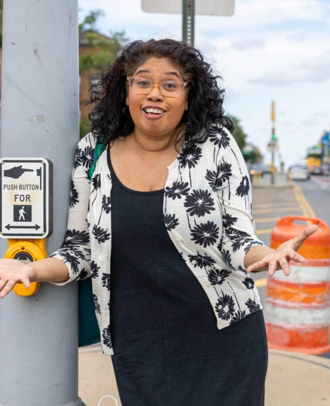

>> I was seventeen. Only child, not a lot of friends. But I had a plan. I was going to become an actress, get a role on All My Children, meet my husband on set– and when that was all over, I’d host a talk show. Kelly Ripa did it; I could do it too. Back then it seemed like every woman on television had gotten their start as beauty queen. So my senior year I decided to enter my school’s Homecoming Queen competition. It was organized like a Ms. America pageant. But this was a rough high school, only one other girl signed up, so I had a good shot. My whole family got behind me. My mom was a seamstress. We noticed that in most pageants we watched, the winner wore a white dress. So she sewed me a white dress that I picked out of Seventeen Magazine. First came the interview portion, and that’s when the trouble started. The judges asked me about the Anita Hill testimony; I wasn’t ready for that. I was ready for world peace. They were supposed to ask me about my goals, so I could say world peace. But that didn’t happen. The talent portion was later that night at the homecoming dance. The whole school was there. I chose a Sheena Easton song; poor choice. Not the right crowd for that. The other girl chose ‘I Feel Good’ by Stephanie Mills, and she had the whole crowd singing along. That’s when I knew it was over. But then, a miracle. The guidance counselor quieted everyone down, and announced the winner: it was me. Me! It was my Kelly Kapowski moment. Everyone was cheering, the other girl congratulated me. But it only lasted five seconds, because the guidance counselor said: ‘Wait a second, I’m sorry. Joanna is the runner-up.’ It was the worst moment of my life. In fact, the only thing that got me through COVID was knowing that it could not possibly, possibly be worse than that moment. And here’s a twist for you. Remember that guidance counselor? Several years later I ended up acting alongside his son in a play at Queens College. In one scene I pulled a gun on him, and the director was like: ‘We need more anger. Think about something that makes you angry.’ I was like: ‘Well, that’s easy. His father ruined my senior year. And quite possibly, my entire life.”